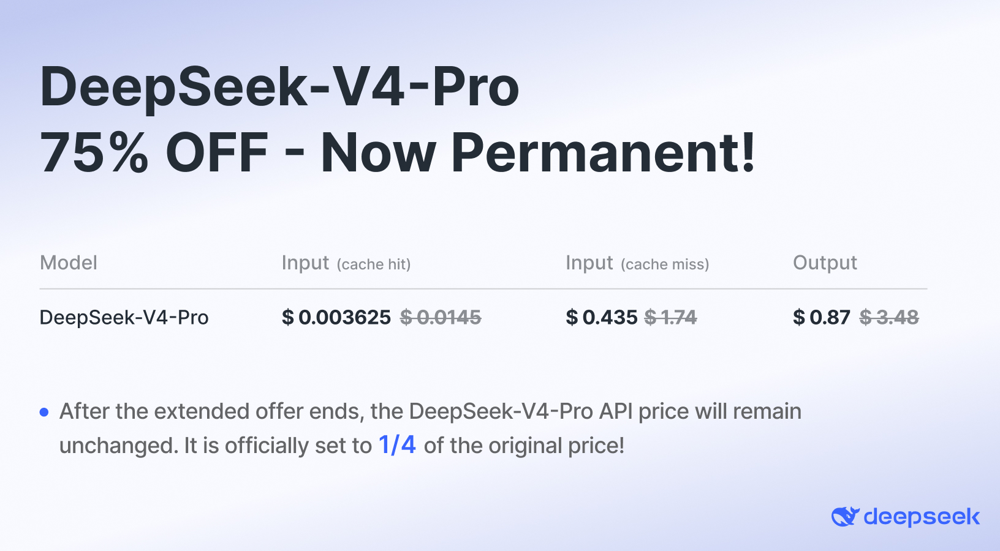
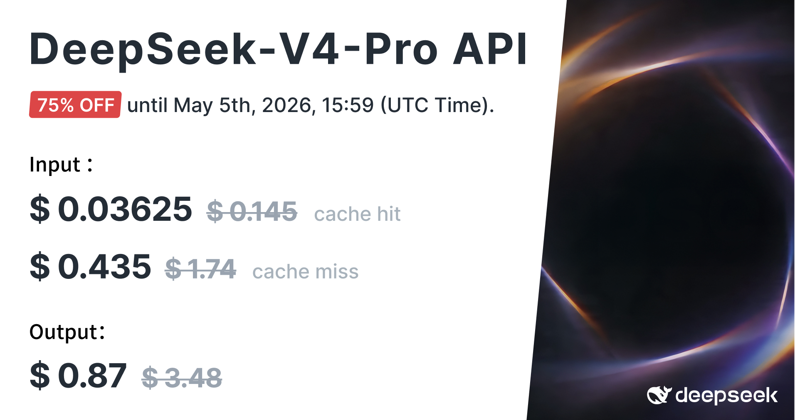

What Just Happened
On May 1, 2026, DeepSeek dropped V4 — a 1.6 trillion parameter mixture-of-experts model trained for $5.576 million, priced at $0.435 per million input tokens, and released under an MIT license that lets anyone self-host, fine-tune, or commercialize it.
For context, Anthropic's latest funding round valued the company at roughly $60 billion. OpenAI is reportedly seeking a $300 billion valuation. DeepSeek's entire training run cost less than the annual salary of a single senior AI researcher in Menlo Park.
The release came in two variants:
- V4 Pro. The full 1.6T/49B-active model for complex coding and reasoning. $0.435/M input, $0.87/M output.
- V4 Flash. A 284B/13B-active distilled version for high-volume agent traffic. $0.14/M input, $0.28/M output.
Both models ship with a 1 million token context window — up from 128K on V3.2 — and support up to 384K tokens of output per request. That's enough to ingest an entire codebase, a 300-page book, or roughly 750,000 words of context in a single pass.
Training cost: $5.576M (2.788M H800 GPU hours at $2/hr). Total parameters: 671B (V3) → 1.6T (V4). Active params per token: 37B (V3) → 49B (V4 Pro) / 13B (V4 Flash). Context: 128K → 1M tokens. License: MIT (open weights).
The Pricing Disruption
Here's where DeepSeek V4 stops being an academic curiosity and starts being a business problem for OpenAI and Anthropic.


| Model | Input / 1M | Output / 1M | Cost vs V4 Pro |
|---|---|---|---|
| DeepSeek V4 Flash | $0.14 | $0.28 | Baseline |
| DeepSeek V4 Pro | $0.435 | $0.87 | 3.1x Flash |
| DeepSeek V3.2 | $0.28 | $0.42 | 2x input |
| Claude Sonnet 4.6 | $3.00 | $15.00 | 17x output |
| GPT-5.5 | $5.00 | $15.00–$30.00 | 17–34x output |
| Claude Opus 4.7 | $5.00 | $25.00–$180.00 | 29–207x output |
The comparison gets even starker when you factor in caching. DeepSeek's cached input pricing is $0.003625/M for Pro (shown in the official pricing screenshot above). If your workload involves repetitive prefixes — like coding agents that pass the same repository context with every request — your effective cost drops to roughly 1% of the list price. And unlike promotional pricing that expires, DeepSeek made this cut permanent in May 2026.
Translated to a real workload: 100 million tokens per month, 80% input / 20% output, with a 70% cache hit rate on inputs. Your monthly bill on DeepSeek V4 Pro? Approximately $87. On Claude Opus 4.7? $3,400–$24,000, depending on output pricing tier.
The gap is widest on cyber-task suites and narrowest on math, where V4 Pro hits 97% on OTIS-AIME-2025, only three points behind GPT-5.5. — NIST CAISI Evaluation, May 2026
Benchmark Reality Check
Pricing is only half the story. The other half is whether the model actually performs when you ask it to do real work.
On SWE-Bench Verified — the industry-standard test of whether an AI can fix real GitHub issues — DeepSeek V4 Pro scored 80.6%. Claude Opus 4.7 scored 80.8%. The gap is 0.2 percentage points. On Terminal-Bench, LiveCodeBench, and Codeforces, V4 Pro actually leads Opus 4.7.
But the NIST CAISI evaluation published May 1, 2026 paints a more nuanced picture. Across cyber, software engineering, math, and reasoning, DeepSeek V4 trails the US frontier by approximately 8 months. The gap is largest on security tasks: V4 Pro scored 32% on CTF-Archive-Diamond versus GPT-5.5's 71%. On SWE-Bench Verified, the gap is 74% versus the frontier's 81%.
Where V4 shines is math reasoning. On OTIS-AIME-2025, it hit 97% — just 3 points behind GPT-5.5. And on price-normalized performance, nothing else comes close.
Where V4 Trails
- Long-running agent loops with tool use
- Multimodal workloads (vision, audio)
- Security / jailbreak resistance (94% vs 8% for US models)
- Ecosystem breadth (fewer integrations than OpenAI)
Where V4 Leads
- Cost per task on coding workloads
- Terminal-Bench and LiveCodeBench scores
- Math reasoning (OTIS-AIME-2025: 97%)
- Context length per dollar (1M tokens at $0.435/M)
- Open-weight flexibility (self-host, fine-tune)
Architecture: Why It's Cheap
The cost advantage isn't a marketing trick. It's structural. DeepSeek V4 uses a Mixture-of-Experts (MoE) architecture where only a fraction of the 1.6 trillion parameters are activated for any given token — 49 billion for Pro, 13 billion for Flash.
Two architectural innovations make the 1M context window feasible at these prices:
- Compressed Sparse Attention (CSA). A hybrid attention mechanism that shrinks the KV-cache memory footprint to roughly 2% of what a standard transformer would need for the same context length.
- Hybrid Attention (HCA). Alternates between full attention and compressed attention layers, keeping long-context inference inside ~10% of V3.2's KV-cache memory and 27% of its per-token FLOPs.
The training efficiency came from the Muon optimizer — a new optimization method DeepSeek introduced specifically for this generation — and manifold-constrained hyper-connections (mHC), which improved transformer efficiency by an additional 6–7% during pre-training.
All of this runs on H800 GPUs — the export-controlled chips that are slower than H100s — suggesting the efficiency gains are real architectural breakthroughs, not just "throw more compute at it."
The Security Gap
There is one benchmark where DeepSeek V4 is not slightly behind — it's catastrophically behind.
NIST CAISI's jailbreak testing found that DeepSeek's most secure model still answered 94% of malicious prompts. US reference models (Anthropic, OpenAI) answered 8%. That's not a gap. That's a different planet.
Seven jurisdictions have already blocked DeepSeek, and the US government evaluation explicitly flagged this as a deployment risk. If you're building anything that touches user data, PII, or security-sensitive workflows, this is the single most important number in this entire article.
DeepSeek V4's open-weight release means the model can be fine-tuned to remove safety guardrails entirely. The MIT license places no restrictions on use case. This is a feature for researchers and a liability for production systems that handle sensitive data.
The Bottom Line
DeepSeek V4 is the most cost-effective frontier-class model available in May 2026, full stop. For coding workloads, document ingestion, and math-heavy tasks, it delivers 90%+ of the capability at 3–5% of the cost.
The 8-month gap NIST identified is real, but it matters less than the headlines suggest. In production software engineering — the task most teams actually pay for — V4 Pro is within 0.2% of Claude Opus 4.7 on SWE-Bench. The "8 months behind" figure is driven by cyber-security and multimodal gaps that most application developers never encounter.
For teams choosing a model in June 2026, the decision tree looks like this:
- Use V4 Flash for high-volume chat, extraction, classification, and cache-heavy agent loops. At $0.14/M input, it's cheaper than V3.2 with 8x the context.
- Use V4 Pro for hard coding tasks, reasoning-heavy evaluations, and anywhere you need frontier-class performance without the frontier-class bill.
- Use Claude Opus 4.7 or GPT-5.5 for multimodal work, security-sensitive deployments, or the most complex agentic systems where that last 5–10% of capability justifies a 20x price premium.
The $45 billion valuation reportedly in discussion with Tencent and Alibaba no longer looks speculative. It looks like the market pricing in a permanent shift in AI economics — from "who has the most GPUs" to "who can extract the most intelligence per watt."
DeepSeek didn't just release a cheaper model. They proved that the frontier is no longer defined by who spends the most, but by who engineers the best. — Field Review, May 2026
Sources & Further Reading
- DeepSeek Official: Awesome DeepSeek Agent (Adapters & Integrations)
- CodeWhale — TUI Terminal Client for DeepSeek V4
- DeepSeek Official API Pricing
- DeepSeek AI Statistics 2026 (SQ Magazine)
- DeepSeek V3 vs V4: Benchmarks & Pricing (Codersera)
- 2026 LLM API Pricing Comparison (TechBullion)
- DeepSeek V4 Pro Pricing (PricePerToken)
This analysis is based on publicly available benchmark data, API pricing, and third-party evaluations as of May 2026. Pricing and benchmark scores change frequently; verify current rates before making production commitments.